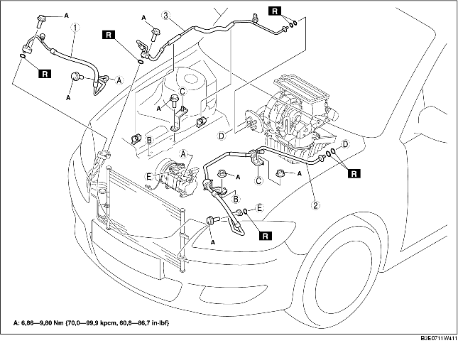

1. Lossa batteriets minuskabel.
2. Tappa ut kylmedlet från systemet. (Se ÅTERFYLLNING AV KYLMEDEL.) (Se LADDNING AV KYLMEDEL.)
3. Demontera reservtanken för servostyrningsvätskan.
4. Demontera reservtanken för kylmedel. (Se DEMONTERING/MONTERING AV KYLARVÄTSKEBEHÅLLAREN.)
5. Demontera gasvajern.
6. Demontera slangfästet för servostyrningsvätskan.
7. Demontera i den ordning som anges i tabellen. Spill inte kompressorolja.
8. Montera i omvänd ordning mot demonteringen.
9. Funktionstesta kylmedelssystemet. (Se FUNKTIONSKONTROLL AV KYLMEDELSYSTEMET.)

.
1. Koppla ur blockförbandsrören genom att hålla i blockets invändiga sida med en tång eller liknande verktyg. Håll fast, och demontera sedan anslutningsbulten eller muttern.
1. Ställ in specialverktyget.
2. Titta genom inspektionsfönstret på specialverktyget och för in den utstickande delen av specialverktyget tills den får kontakt med korgsektionen.
3. Använd specialverktygetför att koppla ur det utsides röret eller slangen från det inre röret genom att dra i det utsides röret eller slangen.
1. Smörj O-ringarna med kompressorolja och anslut kopplingarna.
2. Spänn kopplingarna.
1. Dra åt bulten i förbandet för hand.
2. Anslut blockförbandsrörens genom att hålla i blockets invändiga sida (hona) med tång eller liknande verktyg. Håll fast, och dra sedan åt anslutningsbulten eller muttern med en momentnyckel.
1. Anslut det utvändiga röret (hane) eller slangen genom att vrida in det i det invändiga röret tills tätningsfjädern på det utvändiga röret eller slangen går över den utsvängda delen av det invändiga röret (hona).